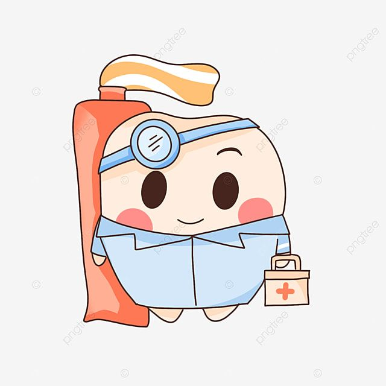
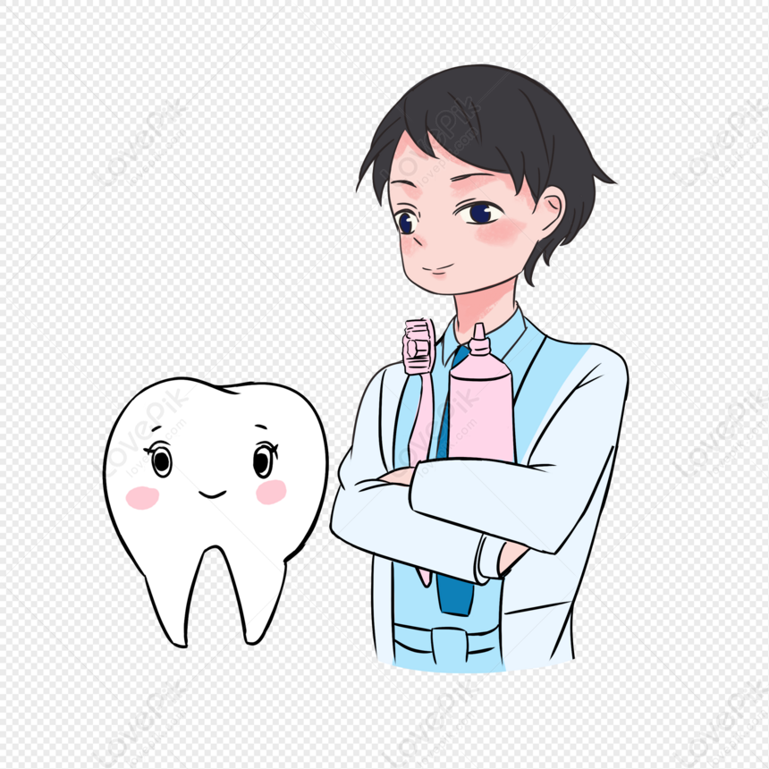

1.ทักษะภาษาอังกฤษ ต้องให้อยู่ในระดับดีเพราะในเอกสาร ในหนังสือเรียนเป็นภาษาอังกฤษหมด
2.ทักษะการสื่อสาร รู้จักอธิบายให้คนไข้เข้าใจง่าย ๆ รู้จักใช้ภาษาให้คนทั่วไปเข้าใจได้ ไม่งง
3.ทำงานเป็นทีม ทั้งผู้ช่วยทันตแพทย์ หมอ พยายาลผู้ที่เกี่ยวข้องที่ต้องสื่อสารให้เคลียร์ เข้าใจเมื่อต้องทำงานร่วมกัน
4.ทักษะการเป็นผู้นำ ต้องสามารถที่จะคิดวิเคราะห์ วางแผน ตัดสินใจและแก้ปัญหาให้ดีที่สุดในการรักษาคนไข้
5.ทักษะความชำนาญด้านหัตถการงานฝีมือ คือ สามารถที่จะปั้น กรอและอุดฟันให้ได้สวยงามและมีคุณภาพตามหลักการได้ เพราะทันตแพทย์ต้องใช้มือได้อย่างคล่องแคล่วเพื่อทำหัตถการทางการแพทย์ในช่องปากของคนไข้ ซึ่งมีขนาดเล็กและซอกซอยมากมาย
6.ทักษะการแก้ปัญหาตัดสินใจ เพราะคนไข้อาจจะมาด้วยความเจ็บปวด หมอต้องมีความกล้าที่จะลงมือรักษาทันที ไม่ลังเลเพื่อให้คนไข้หายจากอาการเจ็บปวดได้อย่างรวดเร็วและมีประสิทธิภาพ
7.ทักษะการจัดการ การจัดการเป็นเรื่องสำคัญทั้งการรายงานผลตรวจ การจัดคิวการรับการรักษาอย่างต่อเนื่อง ทันตแพทย์และทีมผู้ช่วยจึงต้องมีทักษะนี้ โดยเฉพาะอย่างยิ่งหากมีคลินิกของตัวเอง
|  |  |